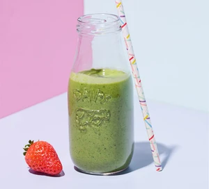

Strawberry Green Goddess Smoothie
Description
Try this tasty breakfast smoothie to start your day, pairing sweet fruit with nutritious spinach and avocade for a dose of calcium, vitamin C, folate and fibre.
Ingredients
- 160g ripe strawberries
- 160g baby spinach
- 1 small avocado, halved with the flesh scooped out
- 150ml pot bio yoghurt
- 2 small oranges, juiced, plus 1/2 tsp finely grated zest
Steps
- Put all the ingredients in a blender and whizz until completely smooth. If it's a little thick, a drop of chilled water then blitz again. Pour into glasses and drink straight away.